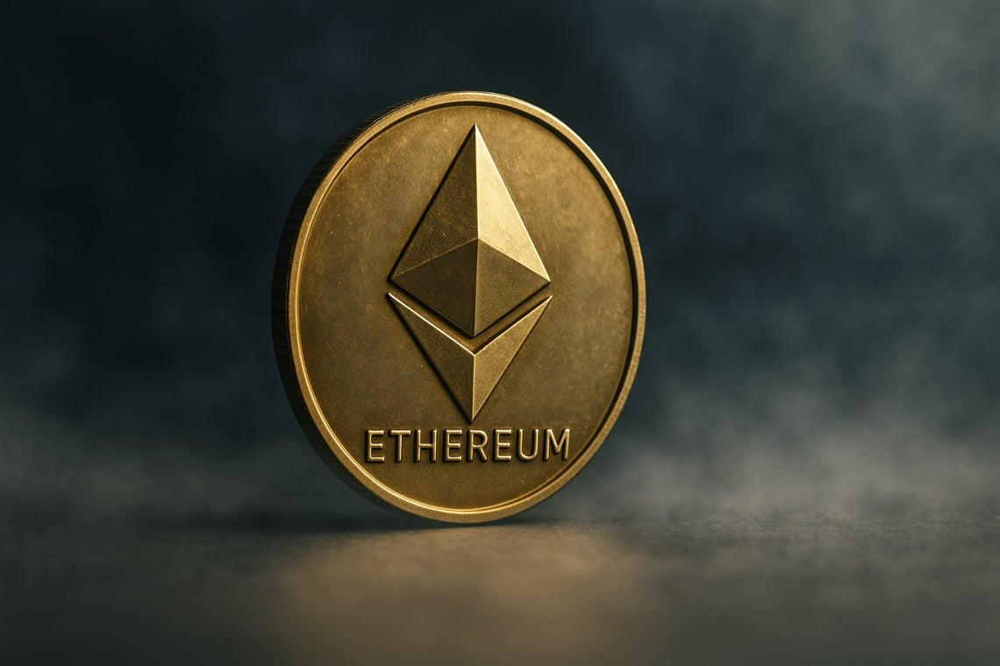
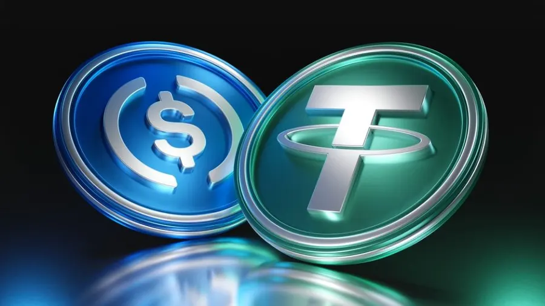
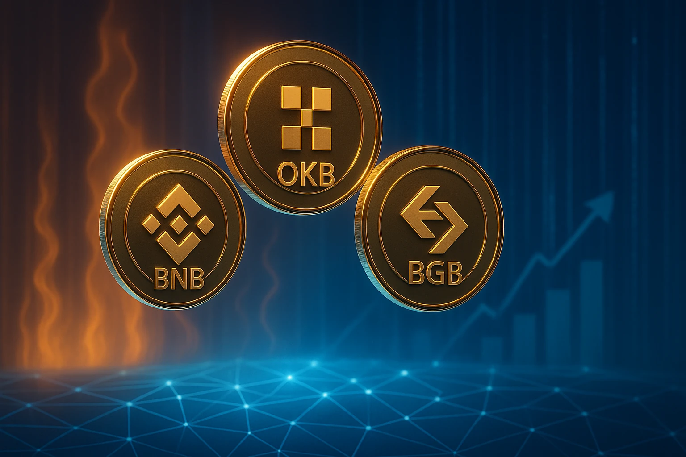

前言：為什麼大家在談加密貨幣？
隨著美國等主要國家陸續提出加密貨幣監管框架，加密資產不再只是少數人的實驗，而是慢慢被納入主流金融體系討論之中。世界各地也開始思考：未來在法定貨幣之外，加密貨幣會不會成為日常支付與資產配置的一部分？
在這樣的背景下，越來越多人把加密貨幣視為「改變財務狀況的一個機會」，希望透過投資或交易掌握新的可能。但現實是，新手往往連加密貨幣的基本原理、風險，甚至「要去哪裡交易」都還不清楚，就匆忙入場。
本網站的目的，是用一般人看得懂的方式，先帶你了解什麼是加密貨幣、相關的核心概念與常見風險，並整理目前市面上幾個主流交易所的特色與差異，協助你在做任何決策之前，先有一個比較完整的基礎認識。
什麼是加密貨幣？
加密貨幣（Cryptocurrency）是一種完全數位化的貨幣形式，沒有紙鈔或硬幣，只存在於網路上。它依靠「區塊鏈」這種分散式帳本技術來記錄交易，不需要傳統銀行或政府當中間人，任何人都可以在網路上自由轉帳、收款或交易。
最早也是最有名的加密貨幣是比特幣（Bitcoin），之後又出現以太幣（Ether）、USDT 等「穩定幣」、以及各種不同用途或題材的代幣。簡單一句話：加密貨幣 = 用密碼學與區塊鏈技術運作的網路貨幣。
如何交易加密貨幣
快速了解交易流程：從選擇交易所、完成註冊，到入金、下單與風險控管的簡要說明。
- 開戶並完成KYC：依交易所指引完成註冊與身份驗證。
- 入金或充幣：以法幣入金或從其他錢包轉入加密貨幣。
- 下單交易：選擇現貨或合約，設定價格與數量提交訂單。
- 安全管理：啟用雙重驗證，分散資產並定期檢視風險。
一、加密貨幣跟一般貨幣有什麼不同？
1. 發行者不同
一般貨幣（台幣、美元）：由各國中央銀行發行，屬於「法定貨幣」。
加密貨幣：通常由程式碼與協議決定發行規則（有的固定總量、有的通膨），不直接由政府控制。
2. 帳本與記帳方式不同
一般銀行帳戶：交易紀錄存在銀行的中央資料庫裡。
加密貨幣：交易紀錄公開寫在「區塊鏈」上，任何人都可以下載或查詢，透過節點共同驗證。
3. 轉帳方式不同
傳統匯款：通常需要銀行或支付機構當中介，可能需要工作天、手續費較高。
加密貨幣轉帳：只要有錢包地址，全球都能直接轉帳，中間不一定需要銀行，但會收取區塊鏈手續費（Gas Fee）。
4. 可逆與否
一般銀行轉錯帳，有機會透過銀行協助申訴或凍結。
加密貨幣交易一旦「上鏈確認」，在技術上幾乎無法撤回，轉錯地址就很難追回。
常見的加密貨幣種類
1. 比特幣（BTC）
比特幣是全球第一個加密貨幣，總量固定 2100 萬枚，被視為「數位黃金」。供給有限、歷史最久，是市場上最具代表性的核心資產。
2. 以太坊（ETH）
以太坊是智能合約的基礎網路，ETH 是運行系統的燃料。大量的 DeFi、NFT、GameFi 都建立在以太坊上。
3. 穩定幣（Stablecoins）
與美元 1:1 錨定的加密貨幣，如 USDT、USDC。常用於避險、轉帳、交易及 DeFi，是市場流動性的重要基礎。
4. 平台幣（Exchange Tokens）
由交易所發行的代幣，如 BNB、OKB、BGB。提供手續費折扣、參與新幣、提升會員權益等功能，其價值取決於交易所生態。
5. 迷因幣（Meme Coins）
由社群文化驅動的代幣，如 DOGE、SHIB、PEPE。波動極大，容易因話題暴漲，也可能快速崩跌，屬高風險投資。
三、加密貨幣背後的核心觀念：區塊鏈與錢包
1. 區塊鏈是什麼？
可以想像成一個由很多人共同維護的公開帳本。所有交易都會打包成一個個「區塊（Block）」，按時間順序接在一起形成「鏈（Chain）」。
每個區塊都透過密碼學方式彼此相連，要竄改過去的紀錄會非常困難。
2. 去中心化的概念
沒有單一公司或伺服器掌控全部資料，資料分散在全球許多節點之間，任何人都可以加入或離開。
3. 錢包、公鑰與私鑰
加密貨幣記錄在區塊鏈上；錢包只是管理你的「鑰匙」。
公鑰／地址：類似帳號，可以給別人轉帳。私鑰／助記詞：類似超級密碼，只能自己持有，一旦外流他人即可完全控制你的資產。
重點：不保管好私鑰／助記詞，就等於把錢包密碼交給別人。
四、加密貨幣可以拿來做什麼？
全球轉帳與支付
可在跨國之間快速轉移價值，不受一般銀行時間限制（需付網路手續費）。
投資與投機
現貨、合約、槓桿、衍生品等交易，屬高風險市場。
去中心化金融（DeFi）
提供流動性、借貸、質押，獲取利息或代幣獎勵。
NFT、遊戲與 Web3 應用
購買 NFT、鏈上遊戲道具、參與 DAO 等，常以加密貨幣作為支付或權益憑證。
以上用途伴隨價格波動與合約風險，並非人人適合。
五、加密貨幣的優點與吸引人的地方
- 全球性與高流動性：只要有網路，就能隨時隨地參與市場。
- 門檻相對低：不一定需要傳統金融機構的審核或最低資產要求。
- 去中心化與抗審查性：交易不易被單一機構凍結或否決（各國仍可透過法規管理）。
- 創新速度快：DeFi、NFT、GameFi 等新模型不斷出現，對喜歡新事物的人很有吸引力。
六、同時也要認識的風險與問題
- 價格極端波動：可能短時間大漲，也可能瞬間腰斬或接近歸零。
- 監管與法律不確定性：各國態度差異大，某些服務可能隨時被限制或下架。
- 技術與平台風險：駭客攻擊、智慧合約漏洞、交易所倒閉或提幣暫停都曾發生。
- 詐騙與假專案多：假投資、假錢包、假空投、龐氏騙局層出不窮。
- 操作失誤難挽回：轉錯地址、弄丟私鑰或助記詞，通常很難找回資產，沒有客服可「重設」。
七、新手應該先有的基本觀念
- 先理解，再碰錢：不要只因「很會賺」就衝進去，先搞懂基本概念、風險與常見詐騙手法。
- 只用能承受損失的金額：加密貨幣接近高風險投機資產，不適合作為生活必需金或緊急預備金。
- 分散風險，不 All-in：不要把全部資金放在同一交易所或鏈上，也不要只壓單一題材幣。
- 重視資安與權限：官方或可信來源下載錢包 App，不隨便點奇怪連結，不把私鑰／助記詞貼給任何人。
八、重要免責聲明
本頁面對加密貨幣的介紹，只是一份中立的基礎知識說明，目的是幫助讀者了解什麼是加密貨幣與它的大致風險與特性，不是、也不構成任何投資建議或保證。
加密貨幣與其相關產品（包含但不限於現貨、合約、槓桿、借貸、理財、NFT、DeFi 等）都屬於高風險資產，可能造成重大虧損，甚至全部損失。
在做出任何投資或使用決定之前，請務必自行研究（DYOR），並視需要尋求專業的財務或法律顧問意見，再決定是否參與。